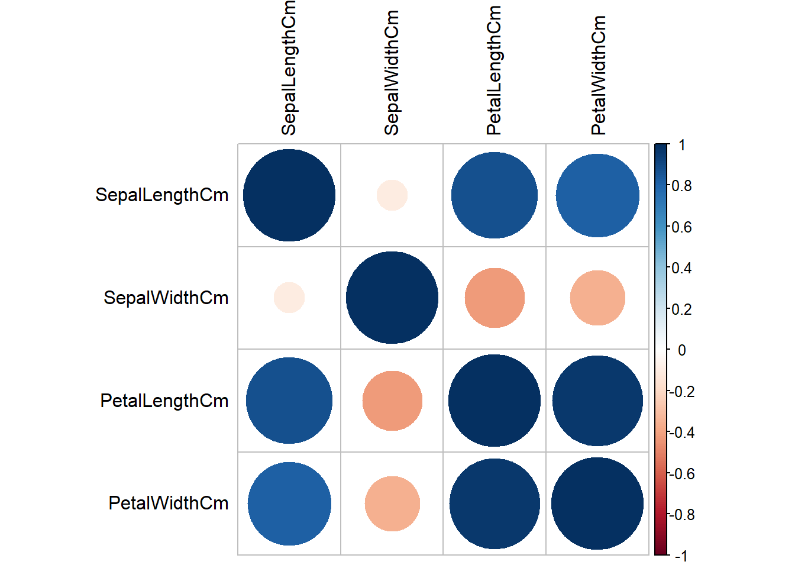
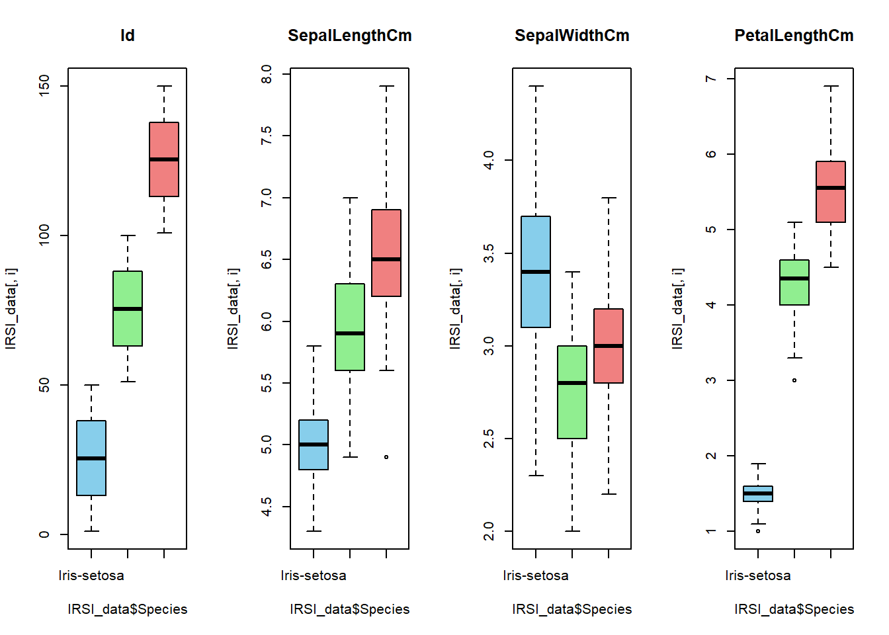
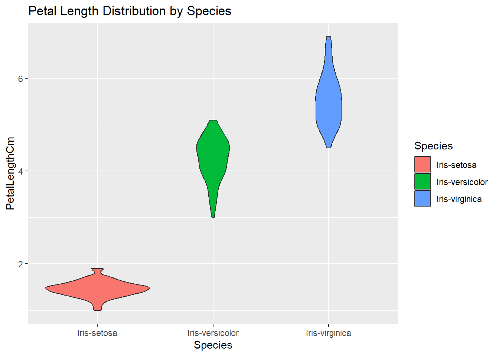

# Load necessary libraries
library(dplyr)Warning: package 'dplyr' was built under R version 4.3.2
Attaching package: 'dplyr'The following objects are masked from 'package:stats':
filter, lagThe following objects are masked from 'package:base':
intersect, setdiff, setequal, unionlibrary(ggplot2)Warning: package 'ggplot2' was built under R version 4.3.2# Load your IRSI data (replace "your_dataset.csv" with your actual dataset file)
IRSI_data <- read.csv("C:/Users/HP/Downloads/Iris.csv")
# Display the first few rows of the dataset
head(IRSI_data) Id SepalLengthCm SepalWidthCm PetalLengthCm PetalWidthCm Species
1 1 5.1 3.5 1.4 0.2 Iris-setosa
2 2 4.9 3.0 1.4 0.2 Iris-setosa
3 3 4.7 3.2 1.3 0.2 Iris-setosa
4 4 4.6 3.1 1.5 0.2 Iris-setosa
5 5 5.0 3.6 1.4 0.2 Iris-setosa
6 6 5.4 3.9 1.7 0.4 Iris-setosa# Check the structure of the dataset
str(IRSI_data)'data.frame': 150 obs. of 6 variables:
$ Id : int 1 2 3 4 5 6 7 8 9 10 ...
$ SepalLengthCm: num 5.1 4.9 4.7 4.6 5 5.4 4.6 5 4.4 4.9 ...
$ SepalWidthCm : num 3.5 3 3.2 3.1 3.6 3.9 3.4 3.4 2.9 3.1 ...
$ PetalLengthCm: num 1.4 1.4 1.3 1.5 1.4 1.7 1.4 1.5 1.4 1.5 ...
$ PetalWidthCm : num 0.2 0.2 0.2 0.2 0.2 0.4 0.3 0.2 0.2 0.1 ...
$ Species : chr "Iris-setosa" "Iris-setosa" "Iris-setosa" "Iris-setosa" ...# Summary statistics for numerical variables
summary(IRSI_data) Id SepalLengthCm SepalWidthCm PetalLengthCm
Min. : 1.00 Min. :4.300 Min. :2.000 Min. :1.000
1st Qu.: 38.25 1st Qu.:5.100 1st Qu.:2.800 1st Qu.:1.600
Median : 75.50 Median :5.800 Median :3.000 Median :4.350
Mean : 75.50 Mean :5.843 Mean :3.054 Mean :3.759
3rd Qu.:112.75 3rd Qu.:6.400 3rd Qu.:3.300 3rd Qu.:5.100
Max. :150.00 Max. :7.900 Max. :4.400 Max. :6.900
PetalWidthCm Species
Min. :0.100 Length:150
1st Qu.:0.300 Class :character
Median :1.300 Mode :character
Mean :1.199
3rd Qu.:1.800
Max. :2.500 # Check for missing values
sapply(IRSI_data, function(x) sum(is.na(x))) Id SepalLengthCm SepalWidthCm PetalLengthCm PetalWidthCm
0 0 0 0 0
Species
0 # Frequency table for the Species variable
table(IRSI_data$Species)
Iris-setosa Iris-versicolor Iris-virginica
50 50 50 # Print column names
colnames(IRSI_data)[1] "Id" "SepalLengthCm" "SepalWidthCm" "PetalLengthCm"
[5] "PetalWidthCm" "Species" # Correlation matrix
cor(IRSI_data[, 1:4]) Id SepalLengthCm SepalWidthCm PetalLengthCm
Id 1.0000000 0.7166763 -0.3977288 0.8827473
SepalLengthCm 0.7166763 1.0000000 -0.1093692 0.8717542
SepalWidthCm -0.3977288 -0.1093692 1.0000000 -0.4205161
PetalLengthCm 0.8827473 0.8717542 -0.4205161 1.0000000# Load the corrplot library
library(corrplot)corrplot 0.92 loaded# Extract the correlation matrix
cor_matrix <- cor(IRSI_data[, 2:5]) # Assuming IRSI_data is your data frame
# Create a correlation plot
corrplot(cor_matrix, method = "circle", tl.col = "black", addrect = 2)
# Boxplot by Species
par(mfrow = c(1, 4))
for (i in 1:4) {
boxplot(IRSI_data[, i] ~ IRSI_data$Species, main = colnames(IRSI_data)[i], col = c("skyblue", "lightgreen", "lightcoral"))
}
# Histogram for SepalLengthCm
hist(IRSI_data$SepalLengthCm, col = "skyblue", main = "Sepal Length Distribution")
# Density plot for PetalWidthCm
ggplot(IRSI_data, aes(x = PetalWidthCm, fill = Species)) +
geom_density(alpha = 0.7) +
ggtitle("Petal Width Density by Species")
# Violin plot for PetalLengthCm
ggplot(IRSI_data, aes(x = Species, y = PetalLengthCm, fill = Species)) +
geom_violin() +
ggtitle("Petal Length Distribution by Species")